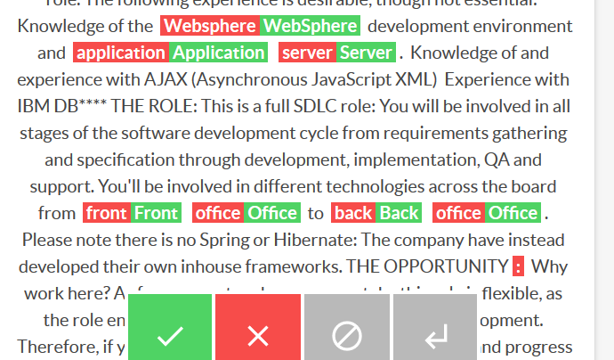
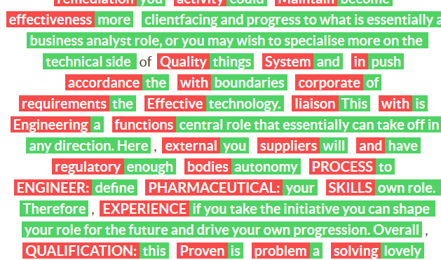

Creating a Diff Recipe in Prodigy
I created a simple custom recipe to show diffs between two texts in Prodigy. I intend to use this to annotate near-duplicates. The process was pretty easy, but I got tripped up a little.
I’ve been extracting job titles and skills from the job ads in the Adzuna Job Salary Predictions Kaggle Competition. One thing I noticed is there are a lot of job ads that are almost exactly the se; sometimes between the train and test set which is a data leak. For information extraction it’s useful to remove these duplicates to make sure frequency counts aren’t skewed by one ad appearing dozens of times.
I thought Prodigy could be a good tool for annotating them. Even though it doesn’t have a way of annotating duplicates it has a diff view which is almost perfect for showing the duplicates.
First I created a example.jsonl file with examples like theirs (make sure the file doesn’t end in a newline or you’ll get an inscrutable error about malformed JSON):
{ "accept": { "text": "Cyber researchers have linked the vulnerability exploited by the latest ransomware to “WannaCry”. Both versions of malicious software rely on weaknesses discovered by the National Security Agency years ago, Kaspersky said." }, "reject": { "text": "Cyber researchers linked the vulnerability exploited by the latest ransomware to 'Wanna Cry'. Both versions of malicious software rely on weaknessses, discovered by the National Security Agency years ago, Kaspersky said" } }
{ "accept": { "text": "Java J****EE Developer ****k ****k Music, Film & TV London Java J****EE Developers required for software house with client sectors of music, film and TV. Salary: Maximum ****: Discretionary bonus and benefits package. Location: Near Euston and King's Cross, London THE COMPANY: Consistent new business wins for the world leader in the provision of software solutions to the Music and Entertainment industry has given rise to the need for an experienced Java Developer. The working environment here is very pleasant with a casual dress code, laid back and friendly atmosphere, but also hardworking and dynamic with the autonomy to drive your job role forward. This is predominantly a development role, but you will be involved in the full product life cycle including design and clientfacing duties, so they need a good allrounder. EXPERIENCE REQUIRED: The experience required for this role is as follows: A minimum of 5 years experience in the development of web applications for the J****EE development platform. A minimum of 5 years experience in Java Strong knowledge in all of JSP, Servlet, JDBC, JavaScript, SQL and HTML technologies. Good knowledge of CSS, XML and DHTML A personality suited to clientfacing situations good communication skills. A good standard of written English The above experience is essential. You require all of the above experience in order for to be eligible for this role. The following experience is desirable, though not essential: Knowledge of the WebSphere development environment and Application Server. Knowledge of and experience with AJAX (Asynchronous JavaScript XML) Experience with IBM DB**** THE ROLE: This is a full SDLC role: You will be involved in all stages of the software development cycle from requirements gathering and specification through development, implementation, QA and support. You'll be involved in different technologies across the board from Front Office to Back Office. Please note there is no Spring or Hibernate: The company have instead developed their own inhouse frameworks. THE OPPORTUNITY Why work here? As for prospects, where you can take this role is flexible, as the role entails a wide remit across most aspects of development. Therefore, if you wish, you could become more clientfacing and progress to what is essentially a business analyst role, or you may wish to specialise more on the technical side of things and push the boundaries of the technology. This is a central role that essentially can take off in any direction. Here, you will have enough autonomy to define your own role. Therefore, if you take the initiative you can shape your role for the future and drive your own progression. Overall, this is a lovely place to work it's a privatelyowned company and feels more like a family company, not at all institutionalised everyone has a stake, everyone has a say. Being music, entertainment and film it's an interesting industry to work in too, with a wide range of clients both local and foreign. Location: Near Euston and King's Cross, London"}, "reject": {"text": "NEW Java J****EE Developer – ****k ****k Music, Film TV London Java J****EE Developers required for software house with client sectors of music, film and TV. Salary: Maximum ****: Discretionary bonus and benefits package. Location: Near Euston and King’s Cross, London THE COMPANY: Consistent new business wins for the world leader in the provision of software solutions to the Music and Entertainment industry has given rise to the need for an experienced Java Developer. The working environment here is very pleasant with a casual dress code, laid back and friendly atmosphere, but also hardworking and dynamic with the autonomy to drive your job role forward. This is predominantly a development role, but you will be involved in the full product lifecycle including design and clientfacing duties, so they need a good allrounder. EXPERIENCE REQUIRED: The experience required for this role is as follows: A minimum of 5 years experience in the development of web applications for the J****EE development platform. A minimum of 5 years experience in Java Strong knowledge in all of JSP, Servlet, JDBC, JavaScript, SQL and HTML technologies. Good knowledge of CSS, XML and DHTML A personality suited to clientfacing situations good communication skills. A good standard of written English The above experience is essential. You require all of the above experience in order for to be eligible for this role. The following experience is desirable, though not essential: Knowledge of the Websphere development environment and application server. Knowledge of and experience with AJAX (Asynchronous JavaScript XML) Experience with IBM DB**** THE ROLE: This is a full SDLC role: You will be involved in all stages of the software development cycle from requirements gathering and specification through development, implementation, QA and support. You'll be involved in different technologies across the board from front office to back office. Please note there is no Spring or Hibernate: The company have instead developed their own inhouse frameworks. THE OPPORTUNITY: Why work here? As for prospects, where you can take this role is flexible, as the role entails a wide remit across most aspects of development. Therefore, if you wish, you could become more clientfacing and progress to what is essentially a business analyst role, or you may wish to specialise more on the technical side of things and push the boundaries of the technology. This is a central role that essentially can take off in any direction. Here, you will have enough autonomy to define your own role. Therefore, if you take the initiative you can shape your role for the future and drive your own progression. Overall, this is a lovely place to work it's a privatelyowned company and feels more like a family company, not at all institutionalised everyone has a stake, everyone has a say. Being music, entertainment and film it's an interesting industry to work in too, with a wide range of clients both local and foreign. Location: Near Euston and King’s Cross, London This job was originally posted as www.cwjobs.co.uk/JobSeeking/JavaJ****EEDeveloper****k****kMusicFilmTVLondon_job****"}}I then copied their examples to make a minimal example duplicate.py:
import prodigy
from prodigy.components.loaders import JSONL
@prodigy.recipe(
"duplicate",
dataset=("Dataset to save answers to", "positional", None, str),
file_path=("Path to file", "positional", None, str)
)
def duplicate(dataset, file_path):
stream = JSONL(file_path)
return {
"dataset": dataset,
"view_id": "diff",
"stream": stream,
}Then I invoked it from the command line:
prodigy duplicate -F duplicate.py test_dataset example.jsonlBut after opening the browser I got an informative error in the console:
✨ ERROR: Invalid task format for view ID 'diff'
'id' is a required property
'mapping' is a required propertySo I copied another example to add ids and mappings to the stream:
def duplicate(dataset, file_path):
raw_stream = JSONL(file_path)
stream = add_options(raw_stream)
return {
"dataset": dataset,
"view_id": "diff",
"stream": stream,
}
def add_options(stream):
for idx, task in enumerate(stream):
task["mapping"] = {'A': 'accept', 'B': 'reject'}
task["id"] = idx
yield taskThen it worked very well; the colour of the text matches the action (accept/reject) which is actually meaningless in our case (we want to know if they are the same or different), but it’s good enough.

However it’s messy for text that’s very different:

Apparently you can configure it to do diffs at a sentence level which may be a little neater. Otherwise I may need to roll my own HTML interface.
Finally I tested the output with prodigy db-out test_dataset which looked like:
{
"accept": {
"text": "Cyber researchers have linked the vulnerability exploited by the latest ransomware to “WannaCry”. Both versions of malicious software rely on weaknesses d iscovered by the National Security Agency years ago, Kaspersky said."
},
"reject": {
"text": "Cyber researchers linked the vulnerability exploited by the latest ransomware to 'Wanna Cry'. Both versions of malicious software rely on weaknessses, discovered by the National Security Agency years ago, Kaspersky said"
},
"mapping": {
"A": "accept",
"B": "reject"
},
"id": 1,
"_input_hash": 1111295394,
"_task_hash": -415472751,
"answer": "accept"
}The answer is accept or reject which doesn’t really line up with the labels, so the data is a bit messy, but usable enough. I’ll need to prepare some more sample data to see whether this is a usable way to annotate duplicates.